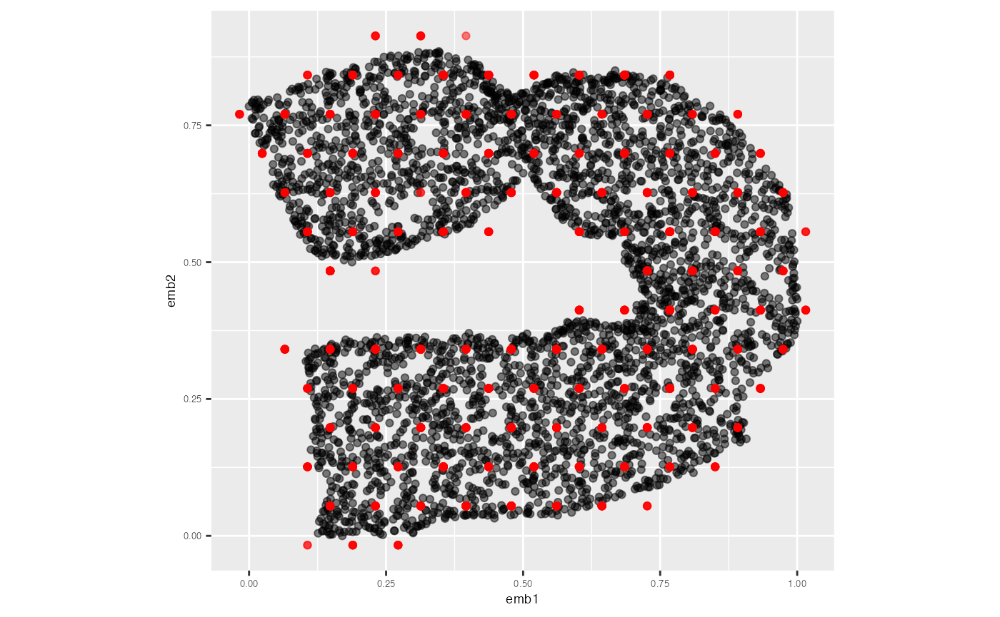

To obtain the model summaries, first you need to obtain the 2D
hexagonal bin centroids which is the 2D model
(df_bin_centroids) and the high-dimensional coordinates of
bin centroids which represents the lifted model in high-dimensions
(df_bin).
r2 <- diff(range(s_curve_noise_umap$UMAP2))/diff(range(s_curve_noise_umap$UMAP1))
model <- fit_highd_model(training_data = s_curve_noise_training,
emb_df = s_curve_noise_umap_scaled,
bin1 = 6, r2 = r2,
col_start_highd = "x")
df_bin_centroids <- model$df_bin_centroids
df_bin <- model$df_binLet’s first compute the model summaries for training data. To do that, you need to predict 2D embedding for the training data.
pred_df_training <- predict_emb(test_data = s_curve_noise_training,
df_bin_centroids = df_bin_centroids,
df_bin = df_bin, type_NLDR = "UMAP")
glimpse(pred_df_training)
#> Rows: 3,750
#> Columns: 4
#> $ pred_UMAP_1 <dbl> 0.226810215, 0.989367382, 0.771493906, 0.117873476, 0.4446…
#> $ pred_UMAP_2 <dbl> 0.84959221, 0.28354031, 0.28354031, 0.66090824, 0.84959221…
#> $ ID <int> 1, 2, 3, 5, 6, 7, 9, 10, 11, 12, 15, 16, 18, 19, 24, 25, 2…
#> $ pred_hb_id <int> 32, 18, 17, 26, 33, 7, 35, 17, 18, 14, 32, 2, 39, 29, 38, …
s_curve_noise_umap_scaled |>
ggplot(aes(x = UMAP1,
y = UMAP2,
label = ID))+
geom_point(alpha=0.5) +
geom_point(data = pred_df_training, aes(x = pred_UMAP_1, y = pred_UMAP_2),
color = "red", alpha=0.5) +
coord_equal() +
theme(plot.title = element_text(hjust = 0.5, size = 18, face = "bold"),
axis.text = element_text(size = 5),
axis.title = element_text(size = 7))
Next, you can use the generated 2D embedding to compute model summaries.
glance(df_bin_centroids = df_bin_centroids, df_bin = df_bin,
training_data = s_curve_noise_training, newdata = NULL,
type_NLDR = "UMAP", col_start = "x")
#> # A tibble: 1 × 2
#> Error MSE
#> <dbl> <dbl>
#> 1 2226. 0.153To obtain a dataframe with the high-dimensional data, the fitted model data, the predicted NLDR data, and summary information, you can use the following function.
augment(df_bin_centroids = df_bin_centroids, df_bin = df_bin,
training_data = s_curve_noise_training, newdata = NULL,
type_NLDR = "UMAP", col_start = "x") |>
head(5)
#> # A tibble: 5 × 32
#> ID x1 x2 x3 x4 x5 x6 x7 pred_hb_id
#> <int> <dbl> <dbl> <dbl> <dbl> <dbl> <dbl> <dbl> <int>
#> 1 1 -0.120 1.64 -1.99 0.0104 0.0125 0.0923 -0.00128 32
#> 2 2 -0.0492 1.51 0.00121 -0.0177 0.00726 -0.0362 -0.00535 18
#> 3 3 -0.774 1.30 0.367 -0.00173 0.0156 -0.0962 0.00335 17
#> 4 5 -0.478 0.0177 -1.88 0.00848 0.00533 0.0998 0.000677 26
#> 5 6 0.818 0.927 -1.58 -0.00318 -0.00980 0.0989 0.00696 33
#> # ℹ 23 more variables: model_high_d_x1 <dbl>, model_high_d_x2 <dbl>,
#> # model_high_d_x3 <dbl>, model_high_d_x4 <dbl>, model_high_d_x5 <dbl>,
#> # model_high_d_x6 <dbl>, model_high_d_x7 <dbl>, error_square_x1 <dbl>,
#> # error_square_x2 <dbl>, error_square_x3 <dbl>, error_square_x4 <dbl>,
#> # error_square_x5 <dbl>, error_square_x6 <dbl>, error_square_x7 <dbl>,
#> # row_wise_total_error <dbl>, abs_error_x1 <dbl>, abs_error_x2 <dbl>,
#> # abs_error_x3 <dbl>, abs_error_x4 <dbl>, abs_error_x5 <dbl>, …The same workflow is followed for the test data as well.
pred_df_test <- predict_emb(test_data = s_curve_noise_test,
df_bin_centroids = df_bin_centroids,
df_bin = df_bin, type_NLDR = "UMAP")
s_curve_noise_umap_scaled |>
ggplot(aes(x = UMAP1,
y = UMAP2,
label = ID))+
geom_point(alpha=0.5) +
geom_point(data = pred_df_test, aes(x = pred_UMAP_1, y = pred_UMAP_2),
color = "red", alpha=0.5) +
coord_equal() +
theme(plot.title = element_text(hjust = 0.5, size = 18, face = "bold"),
axis.text = element_text(size = 5),
axis.title = element_text(size = 7))
glance(df_bin_centroids = df_bin_centroids, df_bin = df_bin,
training_data = s_curve_noise_training, newdata = s_curve_noise_test,
type_NLDR = "UMAP", col_start = "x")
#> # A tibble: 1 × 2
#> Error MSE
#> <dbl> <dbl>
#> 1 758. 0.156
augment(df_bin_centroids = df_bin_centroids, df_bin = df_bin,
training_data = s_curve_noise_training, newdata = s_curve_noise_test,
type_NLDR = "UMAP", col_start = "x") |>
head(5)
#> # A tibble: 5 × 32
#> ID x1 x2 x3 x4 x5 x6 x7 pred_hb_id
#> <int> <dbl> <dbl> <dbl> <dbl> <dbl> <dbl> <dbl> <int>
#> 1 4 -0.606 0.246 -1.80 -0.00897 -0.0187 -0.0716 0.00126 26
#> 2 8 -0.0691 1.59 0.00239 0.0127 -0.0130 0.0396 -0.000185 18
#> 3 13 0.513 1.02 1.86 0.0141 -0.0149 0.0619 -0.00309 8
#> 4 14 0.869 0.576 -0.505 -0.0196 0.00169 -0.0197 0.00597 29
#> 5 17 -0.737 1.94 -1.68 0.00601 -0.0113 0.0301 -0.00988 38
#> # ℹ 23 more variables: model_high_d_x1 <dbl>, model_high_d_x2 <dbl>,
#> # model_high_d_x3 <dbl>, model_high_d_x4 <dbl>, model_high_d_x5 <dbl>,
#> # model_high_d_x6 <dbl>, model_high_d_x7 <dbl>, error_square_x1 <dbl>,
#> # error_square_x2 <dbl>, error_square_x3 <dbl>, error_square_x4 <dbl>,
#> # error_square_x5 <dbl>, error_square_x6 <dbl>, error_square_x7 <dbl>,
#> # row_wise_total_error <dbl>, abs_error_x1 <dbl>, abs_error_x2 <dbl>,
#> # abs_error_x3 <dbl>, abs_error_x4 <dbl>, abs_error_x5 <dbl>, …